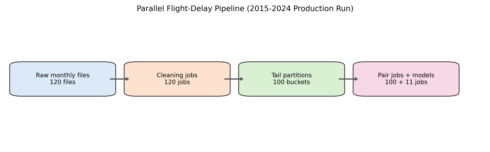
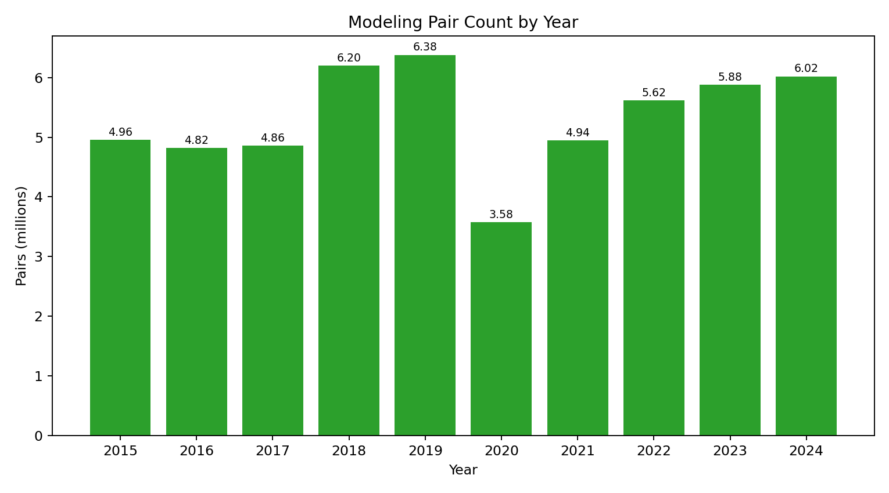
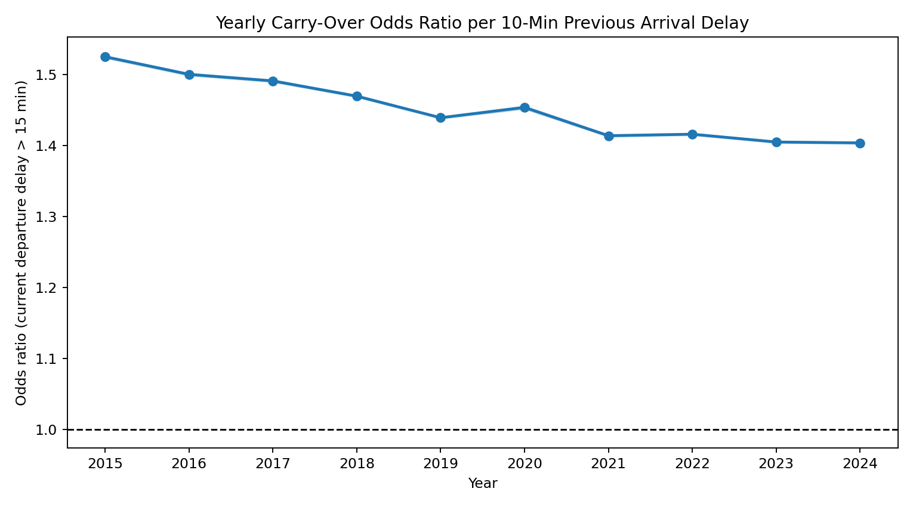
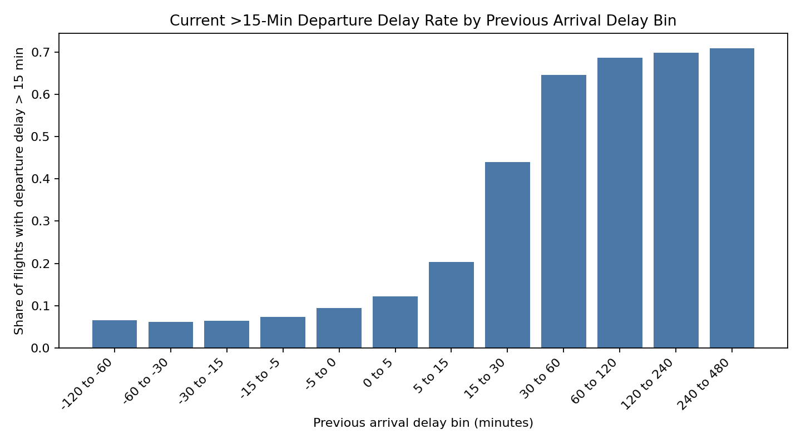
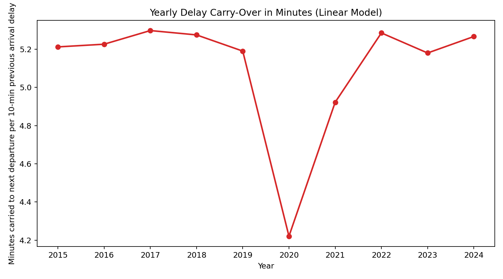
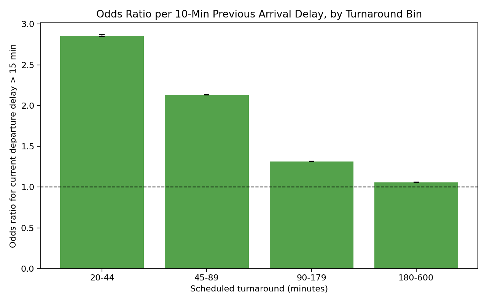
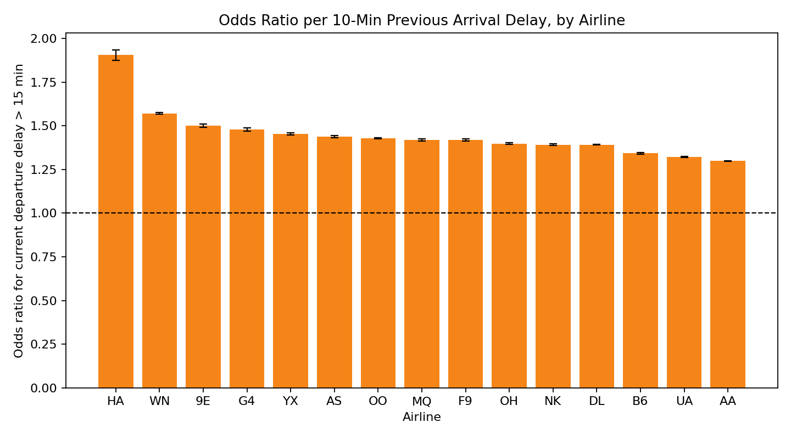
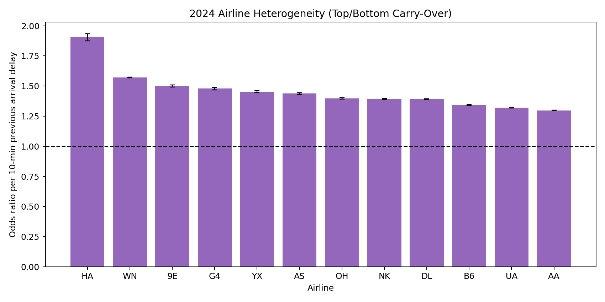

This is the full handoff document for teammates. It is written so someone who did not do the engineering work can still:
We studied whether delay carries over from one flight to the next
when both flights are operated by the same aircraft
(TAIL_NUM).
Main findings:
When a flight arrives late, how much of that delay carries over to later flights of the same aircraft, and how fast does it decay?
stat605_2015_2024_raw.tar)/Users/liyuang/Desktop/stat605/scripts/Users/liyuang/Desktop/stat605/chtc/Users/liyuang/Desktop/stat605/results/chtc_pull/results_2015_2024_yearly/Users/liyuang/Desktop/stat605/results/chtc_pull/results_2024_hetero/2024/Users/liyuang/Desktop/stat605/results/report_figuresKey files there:
fig01_delay_rate_by_prev_delay_bin_2024.pngfig02_carryover_by_airline_2024.pngfig03_carryover_by_turnaround_bin_2024.pngfig04_pipeline_parallel_flow.pngfig05_prev_arr_delay_vs_current_dep_delay_2024.pngfig06_yearly_or10_trend_2015_2024.pngfig07_yearly_linear_minutes_trend_2015_2024.pngfig08_pairs_by_year_2015_2024.pngfig09_airline_top_bottom_2024.pngTAIL_NUMFL_DATEOP_UNIQUE_CARRIERORIGIN, DESTCRS_DEP_TIME, CRS_ARR_TIMEDEP_DELAY, ARR_DELAYDISTANCECANCELLED, DIVERTEDMONTHDAY_OF_WEEKCRS_ELAPSED_TIMEDEP_TIMEARR_TIMEsched_dep_hoursched_arr_hoursched_dep_timestampsched_arr_timestamp (overnight-corrected)route = ORIGIN + "-" + DESTscheduled_turnaround_minutessame_airport_connection = 1(prev_DEST == current_ORIGIN)current_dep_delayed_15 = 1(current_DEP_DELAY > 15)prev_arr_delayed_15 = 1(prev_ARR_DELAY > 15)turnaround_bin in:
20-4445-8990-179180-600dep_period in:
overnightmorningafternooneveningTAIL_NUM, FL_DATE,
CRS_DEP_TIME, CRS_ARR_TIME.TAIL_NUM by scheduled departure
timestamp.prev_DEST == current_ORIGIN20 <= scheduled_turnaround_minutes <= 600This gives the main propagation unit:
Outcome:
current_dep_delayed_15Main regressor:
prev_ARR_DELAYControls:
scheduled_turnaround_minutescurrent_sched_dep_hourcurrent_DISTANCEC(OP_UNIQUE_CARRIER)C(current_month)C(current_day_of_week)C(dep_period)C(current_year) when multi-year fitInterpretation:
Outcome:
current_DEP_DELAYSame controls as above.
Interpretation:
prev_ARR_DELAY * C(OP_UNIQUE_CARRIER)prev_ARR_DELAY * C(turnaround_bin)This section is intentionally detailed so a teammate can replicate the workflow.
ssh yli2827@ap2001.chtc.wisc.eduThen complete Duo push.
cd ~/stat605_delay_pipeline
pwd
lsSubmit file used:
chtc/fit_delay_models_years_2015_2024_main.subCommand:
condor_submit chtc/fit_delay_models_years_2015_2024_main.subThis submit template launches:
chtc/fit_delay_models_one_year.sh--skip-heterogeneity)condor_q
condor_q -hold
condor_q <cluster_id> -nobatchIf held:
condor_q -hold
condor_q <cluster_id>.<proc_id> -better-analyzeCommon hold reason seen in this project:
HoldReasonCode 34 / SubCode 102For heavy years (we observed 2018, 2019, 2024), use a retry submit with larger memory.
Submit file used:
chtc/fit_delay_models_retry_2018_2019_2024.subCommand:
condor_submit chtc/fit_delay_models_retry_2018_2019_2024.subSubmit file used:
chtc/fit_delay_models_2024_hetero.subCommand:
condor_submit chtc/fit_delay_models_2024_hetero.subThis runs:
chtc/fit_delay_models_one_year_hetero.sh--skip-heterogeneityrsync -av yli2827@ap2001.chtc.wisc.edu:~/stat605_delay_pipeline/results_2015_2024_yearly/ \
/Users/liyuang/Desktop/stat605/results/chtc_pull/results_2015_2024_yearly/
rsync -av yli2827@ap2001.chtc.wisc.edu:~/stat605_delay_pipeline/results_2024_hetero/2024/ \
/Users/liyuang/Desktop/stat605/results/chtc_pull/results_2024_hetero/2024/hash(TAIL_NUM) % 100
(keeps aircraft integrity)Inside each year folder (for example
results_2015_2024_yearly/2024):
main_result_table.csv
secondary_linear_result_table.csv
model_coefficients.csv
model_metrics.csv
logistic_delay_model_summary.txt
linear_delay_model_summary.txt
figures/*.png
In 2024 heterogeneity folder:
airline_carryover_summary.csvturnaround_carryover_summary.csv| Year | Pairs | Logistic OR per +10 min | Linear coefficient | Minutes carried per +10 min |
|---|---|---|---|---|
| 2015 | 4,956,280 | 1.525 | 0.5212 | 5.21 |
| 2016 | 4,824,439 | 1.500 | 0.5226 | 5.23 |
| 2017 | 4,862,737 | 1.491 | 0.5297 | 5.30 |
| 2018 | 6,201,714 | 1.469 | 0.5274 | 5.27 |
| 2019 | 6,380,395 | 1.439 | 0.5190 | 5.19 |
| 2020 | 3,575,671 | 1.453 | 0.4221 | 4.22 |
| 2021 | 4,943,061 | 1.414 | 0.4922 | 4.92 |
| 2022 | 5,620,042 | 1.416 | 0.5285 | 5.28 |
| 2023 | 5,883,115 | 1.405 | 0.5180 | 5.18 |
| 2024 | 6,021,015 | 1.403 | 0.5266 | 5.27 |
| Turnaround bin | OR per +10 min |
|---|---|
| 20-44 | 2.859 |
| 45-89 | 2.132 |
| 90-179 | 1.315 |
| 180-600 | 1.059 |
Interpretation:
Message:
Include:
fig08_pairs_by_year_2015_2024.pngInclude:
fig04_pipeline_parallel_flow.pngInclude:
fig06_yearly_or10_trend_2015_2024.pngfig01_delay_rate_by_prev_delay_bin_2024.pngInclude:
fig07_yearly_linear_minutes_trend_2015_2024.pngfig05_prev_arr_delay_vs_current_dep_delay_2024.pngInclude:
fig03_carryover_by_turnaround_bin_2024.png (primary
heterogeneity)fig02_carryover_by_airline_2024.png (secondary
heterogeneity)Say explicitly:








“Using 10 years of BTS domestic flight data and over 53 million same-aircraft flight pairs, we find stable delay propagation from one leg to the next. In logistic terms, every additional 10 minutes of previous arrival delay is associated with roughly 1.45 times the odds of severe departure delay on the next leg. In linear terms, that corresponds to about 5 extra minutes of departure delay carried forward. The strongest heterogeneity is turnaround time: short-turn flights show much higher propagation, which suggests schedule buffer design is a practical lever for improving reliability.”
/Users/liyuang/Desktop/stat605/results/report_figures/team_slides_playbook_en.md/Users/liyuang/Desktop/stat605/results/report_figures/team_slides_playbook_en.html/Users/liyuang/Desktop/stat605/results/report_figures/team_slides_playbook_en.pdf